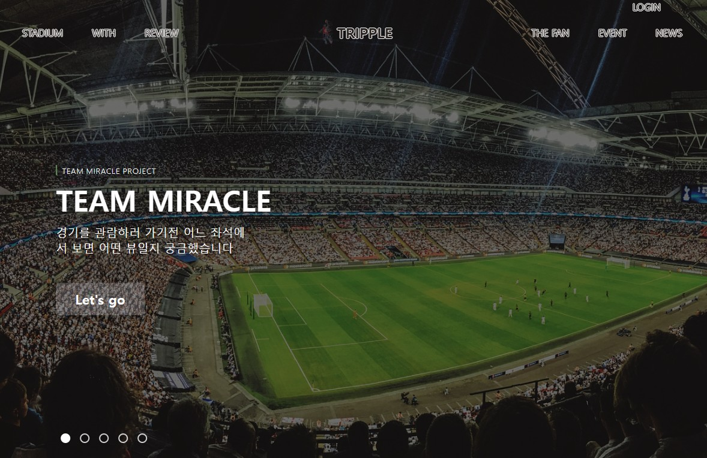
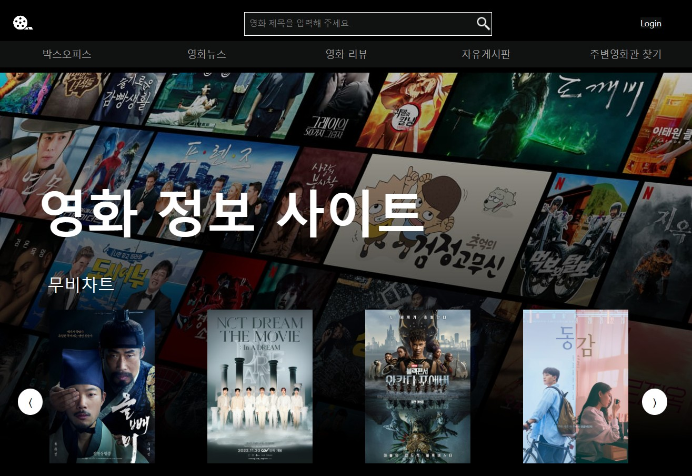

LINK
학력사항
중학교
Ecole Active Bilingue(Paris, France) 1999 - 2001고등학교
Hinkson Christian (Moscow, Russia) 2001 - 2002고등학교
서울 압구정고등학교 2003 - 2004대학교
성균관대 법학과 2004 - 2013해외경험
-
프랑스 파리
2년6개월 -
러시아 모스크바
유년기 2년, 고등학교 1년 -
일본
유년기 2년
언어능력
- 영어
- 프랑스어
이력서는 좌측의 다운로드
버튼을 누르시면 PDF로 저장이 가능합니다.
좌측 섹션 LINK 아래의 메뉴를 누르시면 해당하는 페이지로 이동합니다.
인사말씀
늦은 나이에 시작하여 아직 부족한 점이 많음에도 관심을 가져 주셔서 진심으로 감사드립니다.
지난 날의 실패와 좌절을 극복하고 여기까지 온 것은 지금까지
저에게 아낌없는 성원을 베풀어 주신 모든 분들 덕분이라 생각합니다.
그동안 쌓아 온 경험과 사회에 대한 이해를 바탕으로 협력과 소통에 힘쓰고, 끊임없는
자기계발과 실력배양을 통해 회사 발전에 기여하겠습니다.
경험 및 경력
르노삼성자녀 영어캠프 수퍼바이저
2009외국인 교사 면접 및 계약 진행, 캠프 교육 계획 수립 및 진행 체크, 외국인 교사 관리, 민원 처리
영어 및 수학 과외
2010 - 2015중학교 3학년 대상 영어 및 수학, 고등학교 3학년 수험생 대상 영어 과외
리비아 대사관 자녀 가정교사
2014 - 2015리비아 대사관 자녀를 맡아 영어와 프랑스어를 가르치며 가정교사를 하였습니다. 한국문화를 소개하고 미국인 학교 선생님과의 소통창구 역할도 함께 하였습니다.
편의점 및 일용직
2017 - 2019세븐일레븐 편의점 아르바이트 및 일용직 일을 하였습니다. 나이키, 노스페이스, ABC 마트의 창고에서 피킹 및 물류정리, 기업이사, 전시회 설치 등을 경험했습니다.
축구의류 스타트업 준비 매니저 | (주) 쿠엘
2019 - 2020축구 팀 운영 관련 매니지먼트 회사, 스타트업 법인 관련 사무 처리, 축구 의류 용품 및 전지 훈련지 PM, 의류 업체 및 호텔 거래처 관리
여성의류 창고 및 재고관리 | 스튜디오 제이
2020 - 2022의류 입고 및 출고 업무, 재고 관리, 스마트 스토어 상세페이지 제작(포토샵 활용)
교육이수
솔데스크 개발자 양성과정(2022.9 - 2023.3)
개발은 제가 전공한 법학처럼 평생 공부해야 한다는 점에서 비슷하지만 오히려 제겐 큰 매력이었습니다. 지난 학원에서 배운 6개월은 포기하지 않고 즐겨온 제게 행복한 시간이었습니다.
커리큘럼
기초
- JAVA
- 객체지향 프로그래밍
- Servlet/JSP
- Web Basic
- HTML/CSS
- JavaScript/jQuery
심화
- OracleDBMS
- Spring Framework
특화
- MVC 패턴 비즈니스 로직 모델링
- 프로젝트
IT활용 및 공부한 기술
JAVA
Java를 주로 사용하여 웹 개발 프로젝트를 진행하였습니다. 가장 중요한 언어라고 생각하여 항상 반복 연습하고 있습니다.
Spring
전자정부 프레임워크 3.9 기반으로 파이널 프로젝트를 진행하였습니다. Controller, Service, 어노테이션 개념과 DI (Dependency Injection) 개념에 대하여 이해하고 있습니다.
Servlet&JSP
Servlet의 역할에 대한 이해와 커스텀 태그와 액션태그, jstl 등의 기본적인 사용을 훈련했습니다.
HTML/CSS/JavaScript/jQuery
기초적인 사용을 익혔습니다. 정돈된 틀의 중요성을 느꼈고 프로젝트를 진행하며 CaseStudy를 통해 익숙해 지려고 노력했습니다. 다양한 오픈 라이브버리를 가져와 적용해보았습니다. jQuery의 필요성과 현재의 위치에 대해 이해하고 있습니다. ajax와 함께 사용하는 부분에 대하여 간단히 익혔습니다.
Oracle Database & SQL
Oracle의 기본적인 문법을 반복연습하는데 중점을 두었고 Oracle Cloud를 사용해보았습니다.
Python
최근에 배우기 시작했으며 몇몇 모델을 만들어보고 적용하여 실습하였습니다.
Tools
웹개발에 있어 전체적인 틀과 과정을 이해하는 것도 중요하다 생각하여 기획, 설계, 구현 단계별로 PM을 개인적으로 공부하였습니다. 그 과정에서 Figjam, Lucid Chart 등 여러 툴을 접하였습니다.
사람의 기억력은 유한하기에 공부한 내용은 찾아 쓸 수 있도록 노션에 정리했습니다. 또한 협업을 위한 Git과 Git 편리성 툴로 GitHub Desktop과 SourceTree를 사용했습니다.
프로젝트
Sports View Website
- 기간: 2023.01(3주)
- 역할: 팀장(총 4인)  상세보기
- MVC 프레임워크 및 DI 구현
- 다중 게시판 Database 구조 개선
- 소셜 로그인 및 이메일 인증 구현
- 932개 이상 사진 자료 수집
- 팀 홈페이지(노션) 구축하여 프로젝트 진행
Movie Info Website
- 기간: 2022.11(3주)
- 역할: 팀장(총 4인)  상세보기
- 기본 CRUD와 검색 및 ip값 이용한 조회수 기능
- jQuery를 통한 영화 뉴스 및 맵 api 적극 사용
- Calendar 형식의 박스오피스 날짜별 순위 조회
- 로그인후에도 보고 있던 페이지로 가도록 체크
- 세션 만료시에 대한 여러 경우의 수 대비
관심사
자기소개서
실패와 현재
30대 초반 성공 같았던 달콤함에 취하여 고통스러운 시간을 스스로 만들어 버렸습니다. 후회하지 않고
이겨내기 위해 일용직부터 편의점, 새벽 도매시장 등 가리지 않고 일을 하며 성찰과 성숙의 시간을 보냈습니다.
무한히 돌을 굴리는 시지프 신처럼,
끝이 어떨지 알 수 없어도 더 나은 다음을 위해 고민하고 도전하며 배우는 삶 자체가 보람입니다. 이는 사뭇 개발자의 길과 유사하다고 느꼈습니다. 저는 이러한
마음가짐으로 살아가고 싶습니다. 저 자신이 불리하다고 생각한 적은 없습니다. 아버지는 제게 항상 주어진 상황을 탓하지 말고 겸손하고 배우는 자세로 조직체를
위해 헌신하라 말씀하셨고, 매일 스스로 마음속에 되새기며 나아가고 있습니다.
적응
어렸을 때부터 여러 나라를 옮겨 다니며 이사를 자주 한 경험이 있습니다. 그래서 어떤 환경이든 긍정적으로 빠르게 적응하고 친구들과 원만한 관계를 유지하며 지낼 수 있었습니다. 외국에서는 실내에서 보내는 시간만큼이나 야외활동을 매우 중요시하는 문화는 저와 제법 잘 어울렸던 것 같습니다.
삶에 대한 행동양식
아버지는 가난한 환경에서 홀로 대학에 진학하여 자수성가 하셨습니다. 자신을 위해 희생하신 가족에 대한 책임감이 크셨고 그만큼 저와 동생을 교육하시는데 엄격하셨습니다. 외국에서 받은 자율적인 분위기 속 교육과 아버지의 가르침은 절묘한 균형을 이루었고 제 성장배경에 있어 빼놓을 수 없는 부분입니다. 자율이라는 단어의 무게가 얼마나 무거운지 알고, 항상 균형적인 사고를 하고자 노력하고 있습니다.
인간관계를 대하는 자세
법학을 공부하면 할수록 느낀 점은 법학만큼 불명확한 학문도 없다는 것이었습니다. 원칙보단 예외가 더 많고 그 원칙마저 해석하는 견해조차 다양합니다. 그래서 같은 사처럼 보여도 전후 사정과 논리를 차분하게 파악해야 합니다. 이는 분명 세상을 바라보고 사람을 이해하는 데 큰 도움이 되었습니다. 아직도 부족하지만, 누군가를 만났을 때 제 편한데로만 해석하여 결론을 내는 것이 아니라 여러 경우와 요인들을 알아보고 잘 이해하려는 습관이 생겼습니다.
최고의 노력
2015년 유통회사 대표의 눈에 띄어 회사 관리 업무를 맡아 취직했고 소셜커머스와 납품업체 간의 유통
마진을 이용한 사업 아이디어로 성공에 가까워지는 것만 같았습니다. 그러나 자만심에 빠져 회사에 투자까지 하였으나 대표의 잠적으로 제 삶은 깊은 수렁에
빠졌습니다. 욕심에 눈이 멀어 꿈까지 포기했던 자신을 마주하기가 두려웠습니다. 극복하기 위해 자신 모든 것을 내려놓고 일용직부터 갖가지 일을 하기
시작했습니다. 밤에는 편의점에서, 주말에는 기업 이사, 전시회 설치 일도 했습니다. 정신적으로 극복하고 생계를 유지하기 위해 묵묵히 참고 또 참고
기다렸습니다.
이번 교육에서 제가 쏟은 열정과 노력은 사법시험을 준비하거나 실패를 경험하고 극복하기 위해 몸부림치던 위의 시기보다도 더욱 깊었습니다. 이 길을 선택한
순간부터 모든 생활의 순간순간을 개발에 맞추었습니다. 배울수록 욕심이 생겼고 잊지 않으려고 내용을 매일 정리하는 습관을 들였습니다.
모든 목차와 그림이 머릿속에 그려지는지 점검하며, 항상 더 나은 방법이 없을까 고민하고 매일, 매주, 매달 목표와 계획을 수정하기를 수없이 반복했습니다. 막힐
때마다 스트레스를 받고 재능의 한계라는 핑계로 도피하려 할 때 마음을 다시 잡고 상황을 차근차근 풀어나갔습니다.한 챕터, 한 과목, 한 프로젝트가 끝나면 놓친
부분은 없는지 제대로 기억하는지, 더 나은 방법이 없었는지, 다른 경우에 대한 생각으로 가득했습니다.
마지막이기 때문에 억지라도 개발 공부를 한 것 아니냐 물을 수 있습니다. 그러나 흥미와 학습의 즐거움이 없었다면 금방 포기하였을 것입니다. 감히 개발에 재능이
있다고 말씀드릴 순 없지만 이번 교육을 받았던 시기만큼이나 학습의 고통을 즐기며 열정을 쏟은 적은 없었다고 자부합니다.
현재의 마음가짐
개발에 있어서 못 할 것은 없다는 것이 가장 큰 매력인데 이는 제 삶의 가치관과 상통합니다. 비록
돌고 돌아 늦게 시작하였지만, 오히려 이제는 제 강점으로 활용하고 싶습니다. 다양한 경험들을 바탕으로 협력과 커뮤니케이션을 중요시 여기며 발전하여 조직에
공헌하고 싶습니다.
비록 여러 경험을 해보았다고 하지만 이 분야에서는 완전한 신입입니다. 겸손히 배워서 제 주위에서 근무하시는 분들께 누를 끼치지 않는 게 중요합니다. 무엇보다
효율적인 근무가 되도록 하고 싶습니다. 빠른 적응력과 더불어 신속히 배울 수 있는 습득 능력은 결코 부족하지 않다고 말씀드릴 수 있습니다. 실수는 할 수
있을지언정 책임을 회피하지 않고 최선을 다하겠습니다.